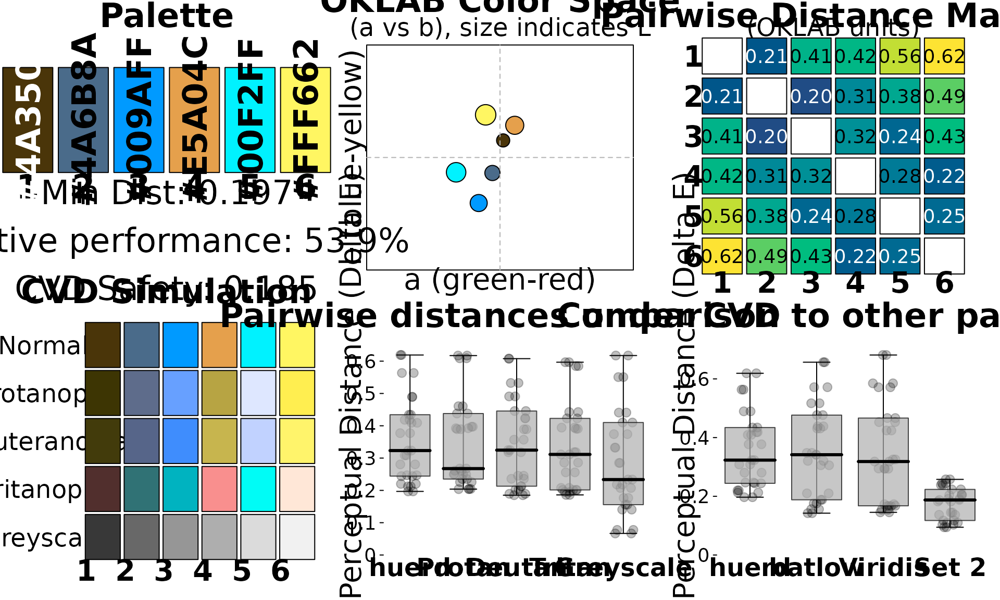

Introduction
The huerd package provides a scientifically-grounded
approach to generating categorical color palettes. It uses a pure
minimax optimization algorithm in the perceptually uniform OKLAB color
space to create palettes with maximally distinct colors.
This vignette will walk you through the core features of
huerd, from basic palette generation to in-depth
analysis.
Installation
You can install the development version of huerd from
GitHub with:
# install.packages("remotes")
# remotes::install_github("sims1253/huerd")Basic Palette Generation
The simplest way to use huerd is with the
generate_palette() function. By default, it will create a
palette of the specified size with colors that are as distinct as
possible.
library(huerd)
# Generate a palette of 5 colors
palette <- generate_palette(5, progress = FALSE)
print(palette)
#>
#> -- huerd Color Palette (5 colors) --
#> Colors:
#> [ 1] #002B62
#> [ 2] #9900FF
#> [ 3] #FF0041
#> [ 4] #FFCE00
#> [ 5] #00FFFF
#>
#> -- Quality Metrics Summary --
#> * Min. Perceptual Distance (OKLAB): 0.264
#> * Optimizer Performance Ratio : 64.2%
#> * Min. CVD-Safe Distance (OKLAB) : 0.227
#>
#> -- Generation Details --
#> * Optimizer Iterations: 307
#> * Optimizer Status: NLOPT_XTOL_REACHED: Optimization stopped because xtol_rel or xtol_abs (above) was reached.All palettes are automatically sorted by brightness (lightness in the OKLAB space), making them intuitive to use.
Constrained Palettes
A key feature of huerd is the ability to include fixed
“brand” colors in your palette while optimizing the remaining colors
around them.
# Generate a 6-color palette that must include a specific blue and orange
brand_palette <- generate_palette(
n = 6,
include_colors = c("#4A6B8A", "#E5A04C"),
progress = FALSE
)
print(brand_palette)
#>
#> -- huerd Color Palette (6 colors) --
#> Colors:
#> [ 1] #4A3509
#> [ 2] #4A6B8A
#> [ 3] #009AFF
#> [ 4] #E5A04C
#> [ 5] #00F2FF
#> [ 6] #FFF662
#>
#> -- Quality Metrics Summary --
#> * Min. Perceptual Distance (OKLAB): 0.197
#> * Optimizer Performance Ratio : 53.9%
#> * Min. CVD-Safe Distance (OKLAB) : 0.185
#>
#> -- Generation Details --
#> * Optimizer Iterations: 269
#> * Optimizer Status: NLOPT_XTOL_REACHED: Optimization stopped because xtol_rel or xtol_abs (above) was reached.Palette Analysis
huerd includes powerful tools for analyzing the quality
of your palettes.
evaluate_palette()
The evaluate_palette() function provides a detailed,
quantitative assessment of a palette’s properties.
# Evaluate the brand palette we just created
evaluation <- evaluate_palette(brand_palette)
print(evaluation)
#>
#> -- huerd Palette Evaluation (6 colors) --
#>
#> -- Perceptual Distances (OKLAB) --
#> * Min distance : 0.1969
#> * Mean distance : 0.3562
#> * Median distance : 0.3232
#> * Std. Dev. : 0.1313
#> * Estimated Max Min : 0.3655 (for unconstrained palette of this size)
#> * Performance Ratio : 53.9% (achieved min / estimated max)
#>
#> -- CVD Safety (OKLAB distances under simulation) --
#> * Worst-case min dist: 0.1851
#> Protanopia : min=0.204, preserved_ratio=1.04
#> Deuteranopia: min=0.185, preserved_ratio=0.94
#> Tritanopia : min=0.186, preserved_ratio=0.94
#>
#> -- Color Distribution (OKLAB) --
#> * Lightness (L) : range=[0.34, 0.95], mean=0.69
#> * Chroma (C) : range=[0.063, 0.183], mean=0.126
#> * Hue (degrees) : circular_variance=0.737This function returns a wealth of information, including:
- Perceptual Distances: Minimum, mean, and other statistics about the distances between colors.
- CVD Safety: How the palette performs under simulated color vision deficiency.
- Color Distribution: Statistics on the spread of lightness, chroma, and hue.
plot_palette_analysis()
For a more visual analysis, the plot_palette_analysis()
function creates a comprehensive dashboard.
# Create the diagnostic dashboard
plot_palette_analysis(brand_palette)
This dashboard provides six key visualizations:
- Color Swatches: An overview of the palette with key metrics.
- Pairwise Distance Matrix: A heatmap showing the perceptual distance between every pair of colors.
- Nearest Neighbor Distances: A bar chart showing how distinct each color is from its closest neighbor.
-
OKLAB Color Space: A projection of the colors in
the
a*b*plane of the OKLAB space. - CVD Simulation: How the palette appears to individuals with the three most common types of color vision deficiency.
- Comparative Palettes: A comparison of your palette’s distance distribution against established palettes like Viridis and Set2.
CVD Accessibility
huerd provides two main tools for working with CVD.
is_cvd_safe()
This function provides a simple, programmatic check to see if a palette meets a minimum threshold for CVD safety.
is_cvd_safe(brand_palette)
#> [1] TRUE
simulate_palette_cvd()
This function allows you to see how your palette would appear to individuals with different types of CVD.
# Simulate the appearance for all CVD types
cvd_simulation <- simulate_palette_cvd(brand_palette, cvd_type = "all")
print(cvd_simulation)
#>
#> -- huerd CVD Simulation Result (Multiple Types, Severity: 1.00) --
#> Palette for: original
#> [ 1] #4A3509
#> [ 2] #4A6B8A
#> [ 3] #009AFF
#> [ 4] #E5A04C
#> [ 5] #00F2FF
#> [ 6] #FFF662
#> Palette for: protan
#> [ 1] #3D3503
#> [ 2] #5E6C8B
#> [ 3] #67A0FF
#> [ 4] #B7A443
#> [ 5] #DEE7FF
#> [ 6] #FFEE50
#> Palette for: deutan
#> [ 1] #423B0B
#> [ 2] #566589
#> [ 3] #3F8DFD
#> [ 4] #C7B54E
#> [ 5] #C1D2FF
#> [ 6] #FFF46B
#> Palette for: tritan
#> [ 1] #512F2D
#> [ 2] #307275
#> [ 3] #00B3C0
#> [ 4] #F98F8E
#> [ 5] #00FCF6
#> [ 6] #FFE7D7